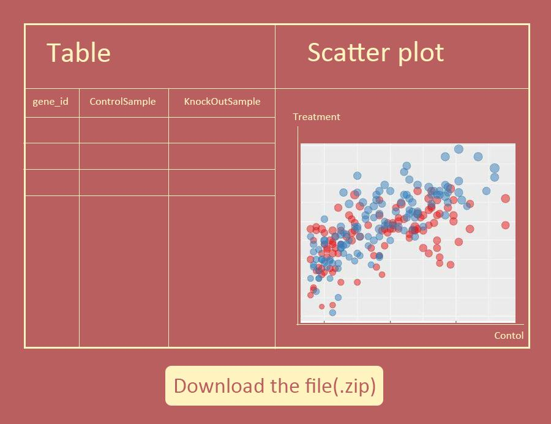

Software Requirements Specification¶
1.Introduction¶
1.1 Purpose¶
This document describes the software requirements of oh my genes. It is intended for the users to identify differently expressed genes by given a gene expression file containing two cell samples.
1.2 Document conventions¶
- Control sample - a cell sample prepared in its normal condition.
- Treatment sample - a cell sample treated by special chemicals, or in which some genes are altered.
- Differentially expressed genes - the genes which have significantly different expression levels between two samples.
- Up-regulation - a gene is said to be up-regulated if it has higher expression in treatment than in control
- logFC - log fold change of gene expression. log_2 [T/C], where T is the gene expression level from a treatment sample, while C is the gene expression level from a control sample.
1.3 Intended audience¶
Biologists in the Little Hill Laboratory for Optimal Life (potentially worldwide).
1.4 Contact information/SRS team members¶
Lumos —– Cai MengYuan & Jin RuoNi.
2.Overall Description¶
2.1 Product perspective¶
The web application has a simple interface with a single button [Upload and GO]. Our scientists upload a plain text file containing gene expression levels from two samples, representing two experimental conditions. Accepting the file, the software will return a table of differentially expressed genes and a scatter plot of these genes whose X-axis is control and Y-axis is treatment. If an invalid gene expression is given, the web application returns a page informing the user to provide the correct format.
2.2 Product functions¶
- The Oh My Genes system has the following functions:
- Provide users with a table of differentially expressed genes.
- Provide users with a scatter plot of these genes whose X-axis is control and Y-axis is treatment.
- Provide users with a gene expression file.
2.3 User classes and characteristics¶
Biologists in the Little Hill Laboratory for Optimal Life (potentially worldwide).
2.4 Operating environment¶
This figure illustrates an example of a Oh My Genes operating environment. It includes a firewall, a Web front-end cluster, and the application server.

2.5 User environment¶
Provide users with personalized settings and ensure the normal operation of the application. The application should apply to the operating system and configuration files of the lab’s computer. The system’s operating environment is divided into two parts of the client.
2.6 Design/implementation constraints¶
The following is the software environment of the system: 1.Client Operating System: Windows 2000 Professional/XP or later Browser: IE6 and above, other common browsers such as FireFox, Chrome, etc. 2.Application server Operating System: Windows 2000 Sever or later Application Server: Tomcat 5.5 or later
3.External Interface Requirements¶
3.1 User interfaces¶
- Input interface The approximate input interface frame is as follows:

- The interface shows a text message to prompt the user to choose a plain text file containing gene expression levels from two samples. A area, click to select local file upload. A button, click to upload the file and call the system to analyze the data.
- Output interface
The approximate output interface frame is as follows:
The interface shows the contents of the output file, which contains a table and a scatter plot given a gene expression file. The table contains a list of differentially expressed genes with the following format: gene_id control_sample treat_sample log_2[FC] AT1G01010 1.198558083 2.036161827 0.76 The scatter plot displays differentially expressed genes. The X-axis is Control, and Y-axis is Treatment. Replace ‘Control’ and ‘Treatment’ with appropriated column names if provided in the uploaded file. The up-regulated genes are shown in red dots, and down-regulated genes are shown in blue.
3.2 Hardware interfaces¶
The server recommends using a dedicated server.
3.3 Software interfaces¶
No special requirements.
3.4 Communication protocols and interfaces¶
No special requirements.
5.Other Non-functional Requirements¶
5.1 Performance requirements¶
- The general response time of the client does not exceed 5 seconds.
- Supports concurrent use and guarantees unaffected performance.
5.2 Security requirements¶
Data encryption
This application program encrypts some important data according to a certain algorithm, such as user password, important parameters, etc.
Data backup Allows users to back up and restore data to compensate for data corruption and loss.
Record log The application should be able to record all errors that occurred while the system was running, including native and network errors. These error logs make it easy to find the cause of the error. The log records the user’s housekeeping operation information and provides history information for the next use.
5.3 User documentation¶
- User documentation distributed with the software includes:
- Installation Manual: txt format file
- User Manual: txt format file
- Online help: HTML Help format files, online
6.Other Requirements¶
- Supports multiple browsers
- System installation is quick and easy, and easy to maintain
7.Others¶
7.1 Use Cases¶
Actors: User
Purpose: To identify differentially expressed genes given a gene expression file containing two cell samples.
Overview: User uploads a plain text file containing gene expression levels from two samples, representing two experimental conditions. The web application displays a table and a scatter plot given a gene expression file.
Main Scenario:
- User uploads a plain text file containing gene expression levels from two samples, representing two experimental conditions.
- Accepting the file, the software will return a table of differentially expressed genes and a scatter plot of these genes whose X-axis is control and Y-axis is treatment.
- Alternate Scenario 2.a (User uploads invalid gene expression):
- User uploads a plain text file containing gene expression levels from two samples, representing two experimental conditions.
- The web application returns a page informing the user to provide the correct format.
7.2 Change cases¶
- Change case: The web application can enter multiple data for processing.
- Likelihood: Certain. Developers have the appropriate technology.
- Impact: Large. The system handles data more quickly and easily.
7.3 Milestone¶
- Step-by-step implementation various functions of the web application, and set up to Milestone in the implementation process to facilitate retrospective changes to the realization of various functions.
- Input A valid submitted gene expression file has the following format. It is a TAB-delimited, plain text file with three columns. The file contains an optional head line, followed by each gene’s expression in a control sample and in a treatment sample.
- Analysis The system analysis and compare the given data. And generate the Output.
- Output The web application displays a table and a scatter plot given a gene expression file.
The table contains a list of differentially expressed genes. The scatter plot displays differentially expressed genes. The X-axis is Control, and Y-axis is Treatment.